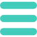

×
Home
Sobre
Convidados
Programa
Contactos

SOBRE
OS EDM... É UM EVENTO ORGANIZADO PELA
ESCOLA TODOS ANOS, CONSISTINDO EM
RESERVAR UMA SEMANA AOS ALUNOS DOS
CURSOS DE DESIGN E MULTIMÉDIA PARA
RECEBER CONVIDADOS NAS SUAS RESPETIVAS
ÁREAS. O OBJETIVO É EXPANDIR OS
CONHECIMENTOS, INSPIRAR E ENSINAR PARA
ALÉM DA ESCOLA E/OU SOBRE O MERCADO
DE TRABALHO.